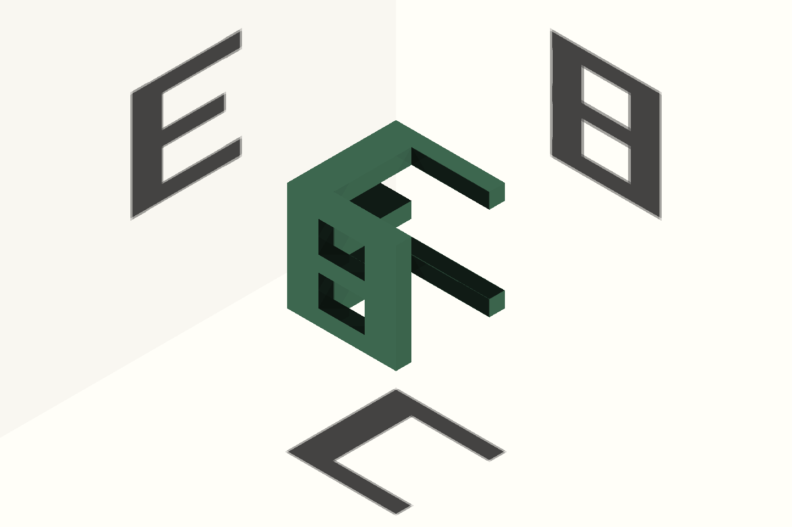

같은 지점을 연결합니다
식당 이름과 상세주소, 관광공사의 콘텐츠 식별자를 확인합니다. 이름만 같다는 이유로 다른 지점의 정보를 붙이지 않습니다.

같은 입체도, 같은 식당도.
어디서 보느냐에 따라 달라집니다.
— 식당 기록
— 자료를 연결
전국에서 찾고, 내 동네에서 골라보세요.자료를 준비하고 있어요여러 시선으로 발견한 식당
공식 자료에 담긴 식당과 위치를 준비합니다.
연결을 확인한 뒤 다시 시도해 주세요.
조건을 하나 줄이거나 ‘하나 이상 OR’로 바꾸면
다른 식당을 발견할 수 있어요.
같은 식당을 바라보는 법
가격을 보는 기관, 위생을 살피는 기관, 전통을 기록하는 기관.
같은 식당을 서로 다른 기준으로 바라봅니다.
그 시선들을 모아, 나에게 중요한 특징을 찾아보세요.
식당 이름과 상세주소, 관광공사의 콘텐츠 식별자를 확인합니다. 이름만 같다는 이유로 다른 지점의 정보를 붙이지 않습니다.
위생등급과 모범음식점은 ‘위생’, 관광공사와 지자체의 소개는 ‘공식 소개’ 한 주제로 합칩니다. 추가 편의 안내도 품질 점수가 아닙니다.
소개·지정 이력과 현재 상태는 다를 수 있습니다. 주소가 없는 기록은 지점을 확인하기 어려워 검색 결과에서 제외했습니다.